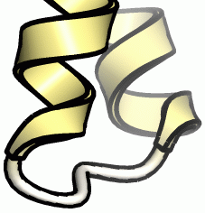

EdgeLines
エッジ線つきのレンダリング¶
CueMol 2.2以降では，POV-Rayを使用してエッジ線（輪郭線）つきのレンダリングを行うことが出来ます．
Rendererのstyleによる指定¶
Sceneパネルにおいて，rendererのstyleを指定することで，簡単にrendererのエッジ線表示をon/offすることが可能です．
Rendererのcontext menuの各項目の意味は以下の通りです．
- No edge line
- エッジ線なし．デフォルト．
- Edge line (normal)
- エッジ線あり，線の太さはふつう (0.06Å)
- Edge line (thick)
- エッジ線あり，線の太さは太め (0.15Å)
- Edge line (thin)
- エッジ線あり，線の太さは細め (0.03Å)
太さの単位はピクセルではなくÅになっていますので， レンダリング時のイメージのサイズを大きくすると，それに応じて線も太くなるようになっています．
各設定での太さは下図のような感じになります．
-
Normal (0.06Å)

-
Thick (0.15Å)
 -
Thin (0.03Å)

設定を変更しても，Mol viewでの表示は変化しません． エッジ線の設定はPOV-Ray renderingの出力にしか影響しないので注意してください．
POV-Rayによるレンダリング¶
以上のようにstyleを変更し，POV-Ray renderingをMenuの「Render」→「POV-Ray rendering」から行います．
この時，Edge linesチェックボックスをonにしてレンダリングを行うと，エッジ線の設定に応じて線が表示されます． （一時的に線をすべて消したい場合はこれをoffにしてレンダリングを行います）
Rendererのpropertyによる指定¶
Styleによる設定よりもさらに細かい指定を行いたい場合は，Rendererのpropertyからエッジ線の設定を行います．
全てのrendererのproperty dialogのcommonタブに，Edge lines:という項目があります．

エッジ線のタイプ¶
Edge lines:横のdrop-down menuの各項目の意味は以下の通りです．
- None
- エッジ線なし．デフォルト．
- Edges
- エッジ線を表示
- Silhouette
- シルエット線を表示
各設定での線は下図のような感じになります．
-
Edges (0.06Å)
-
Silhouette (0.03Å)

シルエット線の場合は，輪郭の部分のみ線が表示されるようになります．
エッジ線の太さ¶
Å単位で指定します．値と見た目の感じの関係は，上図などを参考にして調節してみてください．
*** 色 線の色を指定します．普通は黒にする場合が多いと思いますが，黒バックに白線など，任意の色が指定可能です．


エッジ線の精度¶
どの程度正しくエッジ線が抽出されて描画されるかは，rendererのポリゴン分割数（propertyのdetail値）に大きく依存しています． 以下の図は，線の太さ0.1Åで，左から順にballstick rendererのdetail値を2, 5, 10, 20と増加させた例です．

{kind=link}
{kind=link}
{kind=link}
{kind=link}
{kind=link}
{kind=link}
{kind=link}
{kind=link}
{kind=link}
以上のように，detail値が大きいほど線がきれいに連続的に描画されます．また，detail値が小さいと，線がとぎれとぎれになる傾向がありますが，これは線が細いほど目立つようになります．なので，特に線を太くする場合はdetail値を大きくするように注意した方が良いでしょう．
特に，ballstickの場合のdetailのdefault値は5ですが，上の例からは，線の太さが0.1Åの場合，default値より増やして10以上にしたほうが良いのではないか？という事がわかります．